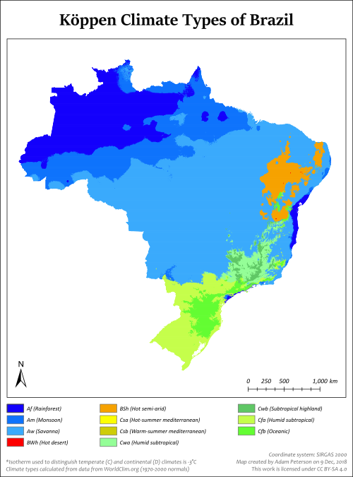
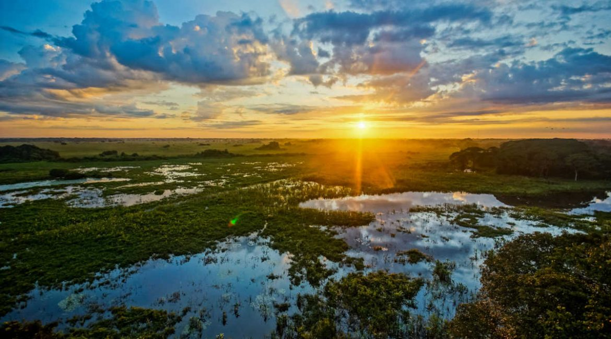
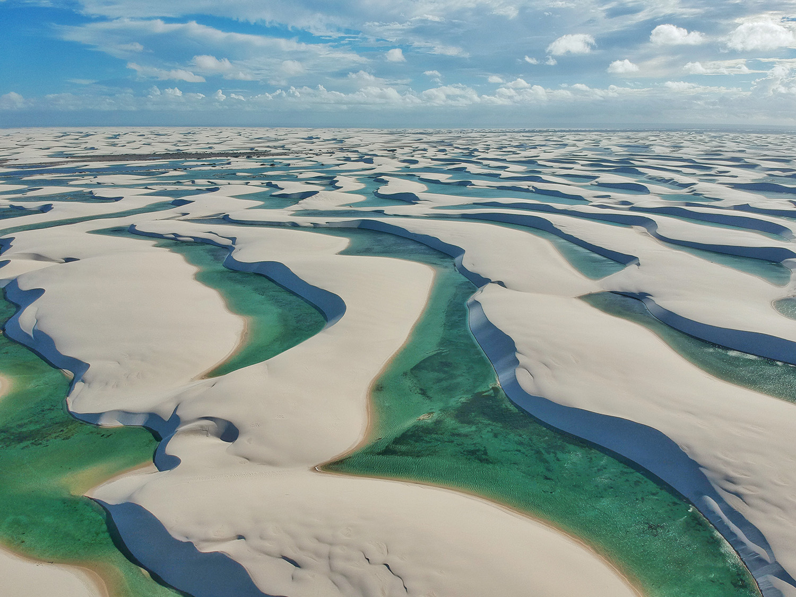

Amazon Rainforest

The Amazon rainforest is the largest tropical rainforest in the world, covering over 5.5 million square kilometers. It is home to an incredible variety of plant and animal species.

Brazil's climate is predominantly tropical, with variations ranging from equatorial in the Amazon Basin to temperate in the southern regions. The country experiences significant rainfall, especially in the Amazon rainforest, which plays a crucial role in global climate regulation.
Brazil faces challenges related to climate change, including deforestation in the Amazon, which affects local and global weather patterns. Efforts are being made to promote sustainable practices and reduce greenhouse gas emissions.
Brazil is home to the Amazon rainforest, which produces about 20% of the world's oxygen and is often referred to as the "lungs of the Earth."
For further information about Brazil's climate, Click Me.

Brazil boasts a diverse range of natural features, including the Amazon rainforest, Pantanal wetlands, Iguazu Falls, and the extensive coastline along the Atlantic Ocean. These features contribute to Brazil's rich biodiversity and ecological significance.
The Amazon rainforest is the largest tropical rainforest in the world, covering over 5.5 million square kilometers. It is home to an incredible variety of plant and animal species.

Iguazu Falls is one of the largest and most impressive waterfall systems in the world, located on the border between Brazil and Argentina. It consists of approximately 275 individual falls.

The Pantanal is the world's largest tropical wetland area, known for its incredible biodiversity. It is a crucial habitat for many species of birds, fish, and mammals.

Lençóis Maranhenses is a unique national park characterized by vast white sand dunes interspersed with seasonal freshwater lagoons, creating a stunning landscape.
Brazil has established numerous national parks and protected areas to conserve its natural heritage. Efforts are ongoing to combat deforestation and promote sustainable tourism in these regions.
The Amazon River, which flows through Brazil, is the second-longest river in the world and has the largest drainage basin globally.
For further information on Brazil's natural features, Click Me.